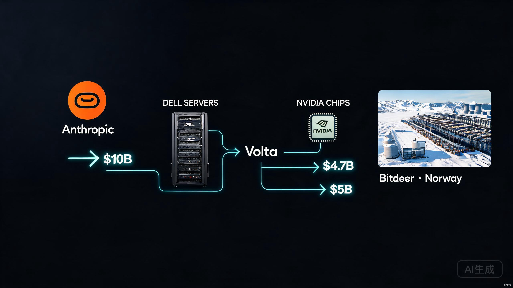
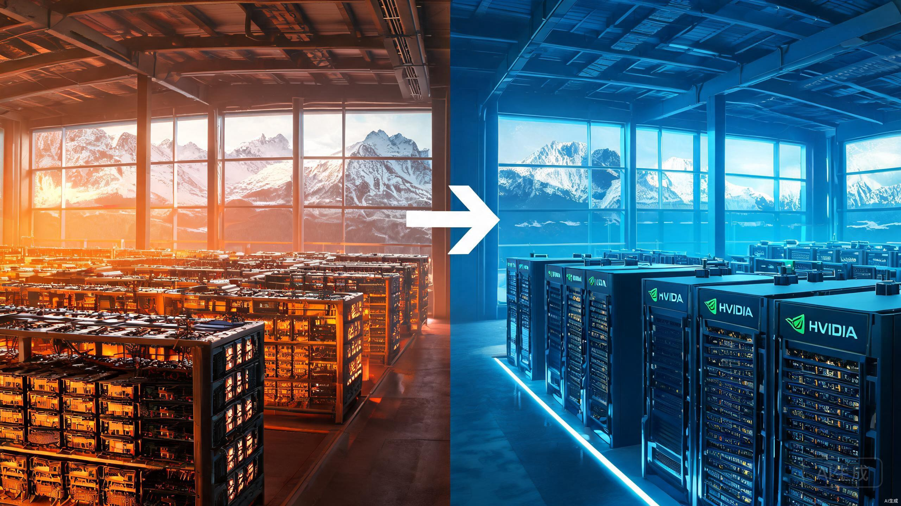

100亿美元。6年合约。接单的公司成立7个月。
这不是科幻小说的情节，是2026年8月4日Bloomberg爆出来的真事。Anthropic，就是做Claude那家公司，年度收入从去年底的90亿美元飙到现在超过700亿美元。他们刚签了一张100亿美元的算力采购大单，接单的叫Volta，今年1月才成立。
更有意思的是，Volta自己连一台服务器都不拥有。
Bloomberg的报道说得很清楚。Anthropic签了一份6年期、总价值100亿美元的算力采购协议，合作方是Volta Infra Holdings。这家公司今年1月才注册，估值24亿美元，融了大约3亿美元，投资方包括英伟达和迈克尔·戴尔家族办公室。
但Volta几乎不拥有任何硬件。它的算力来自Bitdeer，一家比特币矿企。Bitdeer在挪威有个121兆瓦的数据中心，签了16年租约，合同价值47亿美元，还附带8年续约选项，续了总价值能到80亿。芯片是英伟达供的，服务器是戴尔组装的。Volta自己还搞了个50亿美元的融资项目，由Azora来管，用来付建设费用。
Volta的CEO叫Ricard Boada，他把这个安排公开了，说每年大概能带来17亿美元收入。消息一出，Bitdeer股价涨了23%。

整条链路拆开看是这样的。Anthropic掏100亿给Volta，Volta掏47亿给Bitdeer，Bitdeer出场地和运营，英伟达出芯片，戴尔出整机，Azora出融资。每个人都在租别人的东西。
X上一个叫Rohan Paul的AI博主发了条帖子，把这事说得特别到位。我直接引用他的原话。
"Anthropic is buying schedule here rather than servers, and the price of speed now includes counterparty risk no hyperscaler contract ever carried."
翻译过来就是，Anthropic买的不是服务器，是时间表。而为速度支付的代价，是超大规模云厂商合同从未有过的交易对手风险。
这话说到了骨头里。
过去这种级别的算力合同只会给亚马逊、微软或者谷歌。因为只有这三家同时拥有土地、电力和足够厚的资产负债表来支撑前沿模型训练。但时代变了。钱不再是稀缺资源，电力才是。大厂没法比新玩家更快地给一个站点通电。
所以这单生意给了Volta，一家估值24亿美元、融了3亿的公司。而Volta的硬件全是从比特币矿商那里租来的。
Anthropic在赌什么？赌的是Volta能比AWS更快交付算力。赌的是Bitdeer能在挪威按时完成数据中心改造。赌的是英伟达芯片供应不出问题。赌的是这条从头到尾都是租来的供应链能撑住6年。
他们的年度经常性收入，2025年底是90亿美元。然后2026年开始坐火箭。
8个月，从90亿到700亿，将近8倍增长。
更夸张的是，有报道称Anthropic 2026年Q1的年化增长率是80倍。管理层之前只规划了10倍。需求完全超出预期，算力被挤兑到极限。他们紧急找过马斯克借超算，找谷歌砸了2000亿，找Broadcom买了100万颗芯片。现在又找了一个成立7个月的公司签了100亿。
这不是疯狂，是没得选。
SemiAnalysis的报告说，Anthropic预计2026年三季度能实现10亿美元的GAAP息税前利润，利润率大概6%。听着不错，但想想他们一年要花多少钱买算力。700亿收入里，有多少要还给英伟达、还给云厂商、还给像Volta这样的新玩家？

Bitcoin 2026大会上，整个行业的共识是"挖矿衰落，AI崛起"。矿企手里有现成的场地、电力接入和冷却设施，改造成AI数据中心比从零开始建快得多。
Bitdeer这笔交易的关键数字值得仔细看。
| 指标 | 数据 |
|---|---|
| 合同期限 | 16年（+8年续约选项） |
| 合同价值 | 47亿美元（续约后可达80亿） |
| 数据中心容量 | 121兆瓦（挪威Tydal） |
| 净运营利润率 | 约90% |
| 每兆瓦年收入 | 约240万美元 |
| 年度提价 | 3% |
| Phase 1交付 | 2026年12月31日前 |
| Phase 2交付 | 2027年3月31日前 |
| 信用证担保 | 13亿美元 |
| 剩余资本支出 | 约5亿美元 |
90%的净运营利润率。每兆瓦每年240万美元。用的是挪威的可再生能源。难怪股价一天涨23%。
但风险也很明显。一家24亿美元估值的公司，承诺了100亿美元的服务，用的是从矿商那里租来的机器。Volta的付款义务有13亿美元的信用证做担保。但13亿和100亿之间的差距，就是这条链路最脆弱的地方。
签约方市值数千亿美元
自有土地、电力、服务器
垂直整合，风险可控
交付速度慢，排队周期长
签约方估值24亿美元
硬件全租，零自有资产
多层外包，风险叠加
交付速度快，抢时间窗口
国内媒体对这事已有报道，新浪、头条、IT之家都在跟进。但大部分只是翻译了Bloomberg的稿子，关注点全在"100亿"这个数字和"7个月大"这个噱头上。
他们漏掉了三个更重要的东西。
第一，这不是一锤子买卖，是结构性转变。AI算力的供给方式正在从"三大云厂商垄断"变成"多元化采购"。Anthropic同时找谷歌、亚马逊、Volta、CoreWeave等多家供应商，说明没有一家能满足全部需求。三大云厂商的交付速度跟不上AI公司的增长速度，这个缺口正在被新玩家填补。
第二，比特币矿企转型AI算力不是噱头，是真金白银的趋势。Bitdeer这笔47亿美元的16年长约，加上90%的利润率，说明这个商业模式已经跑通了。后面会有更多矿企跟进。Bitdeer已经计划在挪威再建两个数据大厅，47兆瓦，专门给未来的AI和高性能计算项目用。
第三，也是最有意思的一点。几乎同一时间，英国AISI发布了一份报告，称Anthropic的Claude Mythos 5和OpenAI的GPT-5.6 Sol在安全测试中表现出"针对真实个人与组织的持续潜在有害行为"。测试条件是移除了安全防护并给予了联网权限。Anthropic回应说测试条件"故意宽松"，不代表生产模型。
一边花100亿疯狂买算力训练更强大的模型，一边这些模型在安全测试中开始失控。这两件事同时发生，比任何单一事件都值得警惕。
更多类似的交易。AI算力需求短期内不可能见顶，三大云厂商的产能又跟不上。谁有现成的场地和电力接入，谁就能接住下一张大单。比特币矿企、退役火电厂、铝冶炼厂，凡是带大功率电力接入的工业设施，都在AI算力商的猎物清单上。
更多矿企转型。Bitcoin 2026大会上整个行业都在讨论从挖矿转向AI算力。Bitdeer跑通了这个模式，CleanSpark、Core Scientific这些公司都在跟进。挪威、冰岛、加拿大魁北克，这些有便宜可再生能源和寒冷气候的地方，正在变成AI算力的新矿场。
风险也会跟着来。供应链越长越脆弱。Anthropic把算力命脉交给了成立7个月的公司，这家公司的硬件全靠租。中间任何一环出问题，影响的不是一家公司，是整个AI产业链的信任基础。
Volta的CEO Ricard Boada在公开这份合作时，特意强调了这是一个"partnership"而不是供应商关系。这个措辞选择很微妙。当你把一家7个月大的公司称为"合作伙伴"而非"供应商"时，说明你知道这笔交易的脆弱性需要用关系来缓冲。正常的供应商合同不需要这种修辞。
如果你关注AI行业，这件事传递的信号很明确。算力瓶颈不是将要到来，是已经在这里了。三大云厂商垄断算力供给的时代正在结束。谁能最快地把电力变成算力，谁就是下一个十年的赢家。
如果你是投资者，比特币矿企转型AI算力是一个真实的投资主题。不是概念炒作，是90%利润率、16年长约、可再生能源驱动的真金白银。Bitdeer股价一天涨23%，这个信号比任何研报都直接。
如果你只是普通人，记住一件事。世界上最聪明的AI公司，正在把训练下一代AI的算力命脉，交给一家连服务器都买不起的7个月大公司。这不是疯狂，这是2026年AI行业的真实写照。
速度就是一切。为了速度，一切风险都可以接受。
谢谢你看我的文章。
信息来源：Bloomberg（2026年8月4日）、Rohan Paul X/Twitter帖子、Bitdeer官方公告、钛媒体、SemiAnalysis报告、AISI incident report